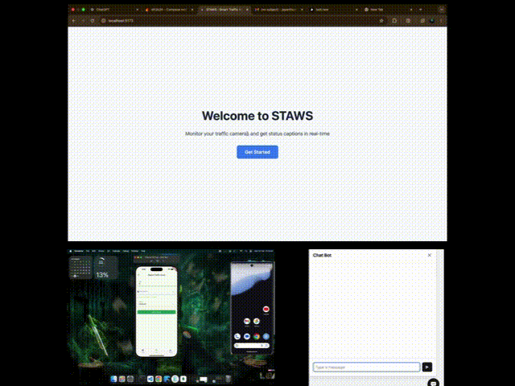

Abstract
India reports approximately 1,500 road accidents and 500 fatalities daily, yet the country's 1.5 million+ CCTV cameras along road networks remain largely passive — recording for archival rather than real-time response. STAWS (Smart Traffic Accident Warning System) is an AI-powered ecosystem that converts this existing surveillance infrastructure into an active emergency response network. The system employs a three-stage pipeline: automated video captioning for scene understanding, urgency-aware triage via sentiment analysis, and Kafka-backed multi-channel alerting to authorities and the public. The architecture is further augmented with crowdsourced intelligence through a user-facing mobile application, creating a bidirectional information ecosystem that significantly reduces emergency response time.
Introduction

India's road accident fatality rate is among the highest globally, with National Crime Records Bureau data confirming approximately 500 deaths per day from road traffic accidents as of 2023. The gap between accident occurrence and emergency response is a primary determinant of survivability. Current monitoring infrastructure — comprising over 1.5 million CCTVs deployed by municipal, state, and national highway authorities — is architecturally passive: operators must actively monitor feeds, and response is contingent on human detection.
AI video analysis has reached the maturity required to automate this detection step. Modern video language models can generate accurate, structured descriptions of traffic scenes in near real-time. The challenge is not detection accuracy alone, but the full pipeline from raw video to coordinated emergency response — including prioritization, routing, and public notification. STAWS addresses this end-to-end problem.
System Architecture
STAWS processes incoming video feeds through a three-stage AI pipeline, backed by an event-streaming architecture built on Apache Kafka for high-throughput, fault-tolerant message delivery.
Video Captioning — Scene Understanding
Incoming CCTV feeds are processed by a video captioning model that generates structured natural-language descriptions of each scene. Captions encode key event attributes: collision type, number of vehicles involved, casualty indicators (persons on road, unusual vehicle orientation), and location metadata. This transforms raw video into a structured text stream suitable for downstream NLP analysis.
Urgency Triage — Sentiment & Severity Analysis
Caption text is passed through a fine-tuned sentiment and urgency classification model that assigns each event a triage level: Low (minor traffic disruption), Medium (property damage, no visible casualties), High (injured persons, blocked lanes), or Critical (multi-vehicle pile-up, unconscious victims, hazardous materials). This triage layer ensures that alerting resources are proportional to event severity and prevents alert fatigue from low-priority events.
Automated Alerting — Multi-Channel Response Dispatch
Events above the Medium threshold trigger automated alerts through Kafka message queues to: (1) nearest traffic police units via dispatch dashboard, (2) highway authority control rooms, (3) ambulance dispatch centers for Critical-level events, and (4) public via app notifications for route planning. Alert content includes location, severity, captioned description, and a direct link to the relevant CCTV feed for human confirmation.
Apache Kafka Backend
Kafka provides the scalable, fault-tolerant message backbone connecting all pipeline stages. Its distributed log architecture ensures no events are lost under high load and supports replay for retrospective analysis. A single Kafka broker can sustain millions of CCTV event messages, making the architecture inherently scalable from pilot to national deployment.
Crowdsourced Intelligence
Fixed CCTV infrastructure has inherent blind spots. STAWS addresses this through a citizen-reporting mobile application that enables users to submit geo-tagged incident reports — photos, short video clips, or voice messages — directly into the same Kafka pipeline as CCTV feeds. Crowdsourced reports are processed through the same captioning and triage pipeline, with additional source credibility weighting based on reporting history and corroboration with nearby CCTV data.
This bidirectional model creates a network effect: more users increase coverage density, particularly on rural highways and local roads where CCTV deployment is sparse. Simultaneously, verified CCTV alerts are broadcast to app users for route optimization, encouraging further adoption.
Route Optimization Integration
Confirmed accident alerts are automatically fed into the route optimization layer, which broadcasts affected road segments to navigation systems. This reduces secondary accidents caused by rubbernecking and congestion-induced incidents, and helps emergency vehicles find the fastest approach path to the scene.
Deployment Strategy
STAWS is designed for incremental deployment across four phases, allowing government and institutional partners to validate the system before committing to full-scale infrastructure integration:
Phase 1 — Pilot: Single-city deployment on 50–100 high-incident-rate camera feeds. Primary objective is false-positive rate calibration and response time measurement.
Phase 2 — City Scale: Full municipal deployment across a single metro area. Integration with traffic police dispatch and ambulance services. App beta launch.
Phase 3 — State Scale: Integration with National Highway Authority feeds and state disaster response units. Public app launch with route optimization.
Phase 4 — National Network: Full integration with India's national CCTV grid. Predictive risk modeling using historical accident data and current traffic density to pre-position emergency resources.
The system supports subscription-based licensing (per-camera or per-city), pay-per-use API access for navigation and insurance partners, and government tender models for direct procurement by traffic authorities.
Conclusion
STAWS demonstrates that India's existing passive surveillance infrastructure can be transformed into an active life-saving network with targeted AI integration. By converting video to captions, captions to triage decisions, and triage to automated dispatch, the three-stage pipeline eliminates the human detection bottleneck that currently governs emergency response time. The Kafka backbone ensures the architecture scales from pilot to national deployment without fundamental redesign. The crowdsourcing layer extends coverage beyond fixed infrastructure and creates a civic participation model that incrementally improves system coverage over time.
Resources
Contact
Nikhileswara Rao Sulake — nikhil01446@gmail.com · LinkedIn · GitHub